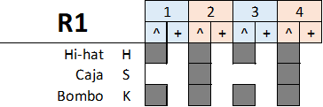
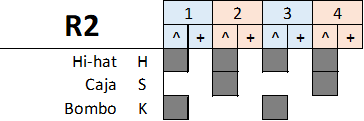
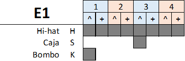
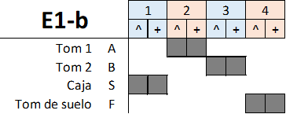
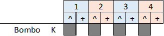
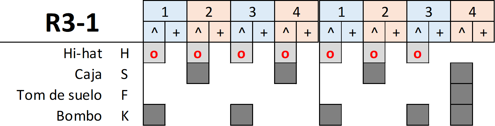
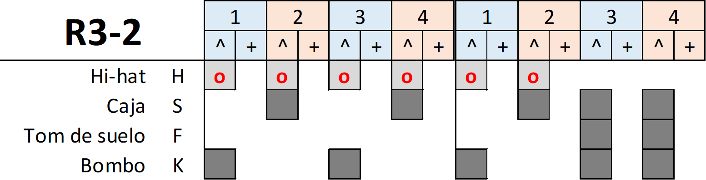

Intro: (R1: 8) Estrofa: (R2: 8+8 + 8+8) Puente: (E1: 7)(E1-b: 1) Estrofa: (R2: 8+8 + 8+8) Puente: (E1: 7)(E1-b: 1) Estribillo: (R3-1: 8 + 7)(R3-2: 1) Puente: (E1: 7)(E1-b: 1) Solo Puente: (K: 7)(E1-b: 1) Solo Re -> Mim -> Fa#m -> Re -> La (Bis) Puente: (E1: 7)(E1-b: 1) Final: (R3-1: 4)(xn)
(R1: 8) Intro (R2: 8+8) En sueños lanzas tus lanzas. Vives de alianzas. Preparas bien para esta noche tu venganza. Verás de lo que soy capaz. (R2: 8+8) Te enredas en estúpidas tretas. Persigues peligrosas metas. No te dejaré marchar sin saber lo que viniste a hacer. Sabrás de lo que soy capaz. (E1: 7) Casi nadie la conoce, Teseo la olvidó. (E1-b: 1) Es la verdadera musa, la Diosa del Amor. (R2: 8+8) Visiones de un futuro incierto. Tal vez sea mal momento. Navegas en las turbias lenguas del desconcierto. Verás de lo que soy capaz. (R2: 8+8) Si juegas perderás la apuesta. Tendrás que subir la oferta. No te dejaré marchar sin saber por qué quieres jugar. Sabrás de lo que soy capaz. (E1: 7) Casi nadie la conoce, Teseo la olvidó. (E1-b: 1) Es la verdadera musa, la Diosa del Amor. (R3-1: 8) La noche de Ariadna no se suicidó. Murió por Teseo, Diana la mató. (R3-1: 7) Es el Hilo de Ariadna, él la traiciono. (R3-2: 1) Tan sólo la entiende la Diosa del Amor. (K: 7) Nadie supo qué fue de ella, si se suicidó. (E1-b: 1) Es la verdadera musa, la Diosa del Amor. Solo (E1: 7) Nadie supo qué fue de ella, si se suicidó. (E1-b: 1) Es la verdadera musa, la Diosa del Amor. Solo Re -> Mim -> Fa#m -> Re -> La (Bis) (E1: 7) Casi nadie la conoce, Teseo la olvidó. (E1-b: 1) Es la verdadera musa, la Diosa del Amor. (R3-1: 4) Es Hilo de Ariadna, es el Hilo de Ariadna. (xn)